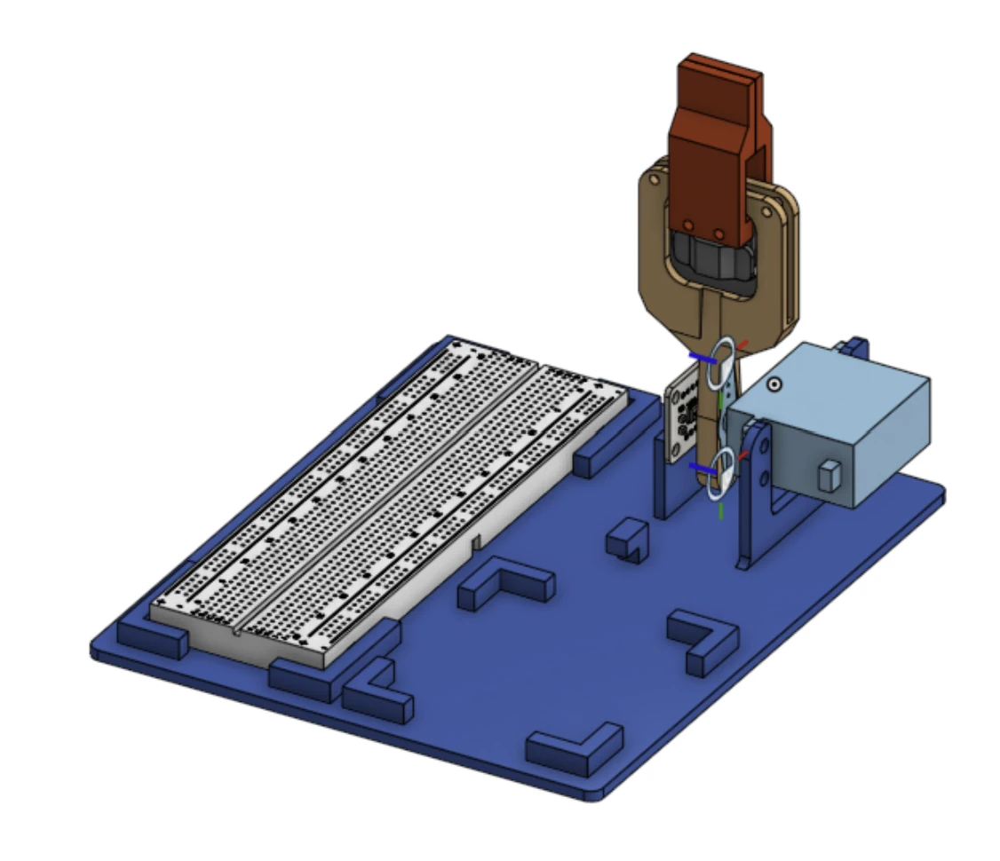
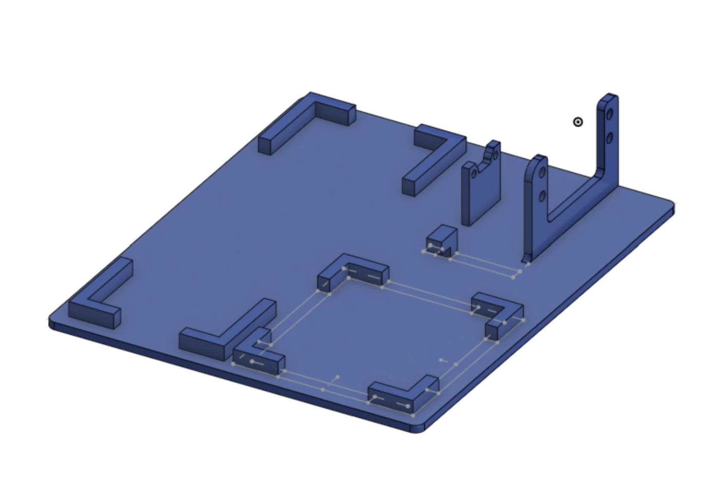
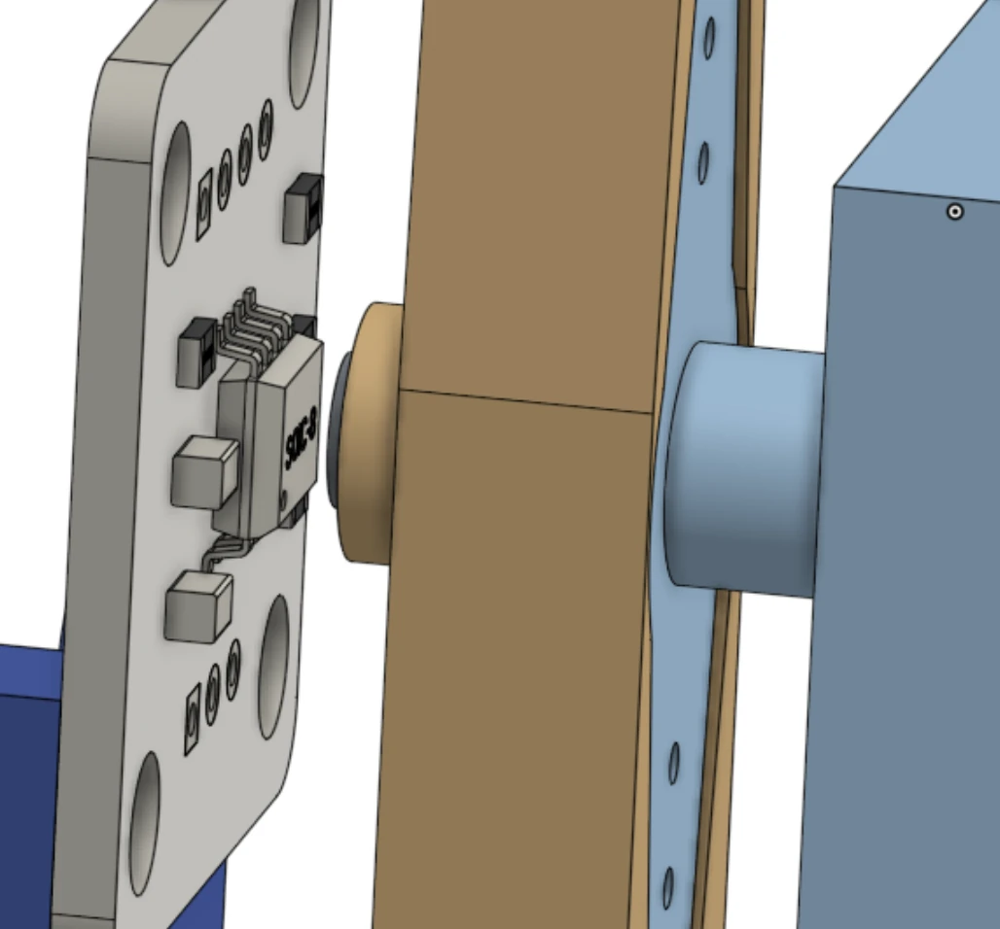
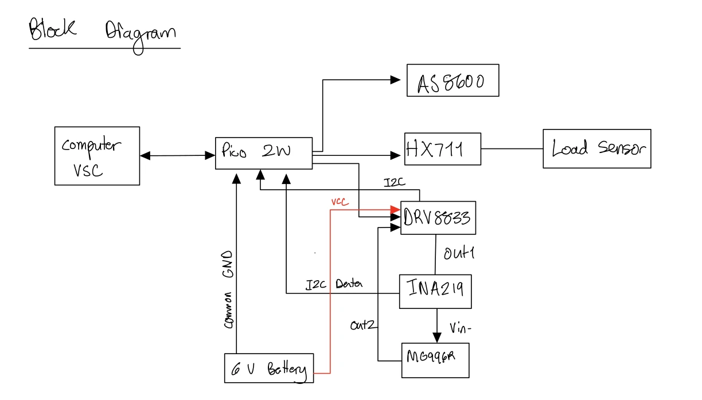
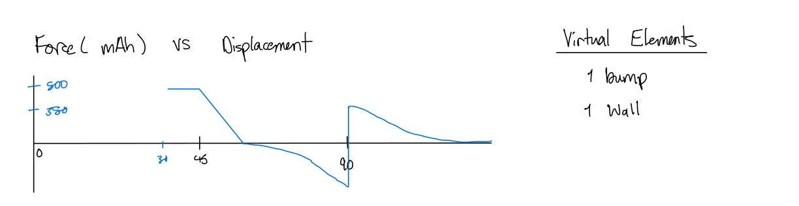
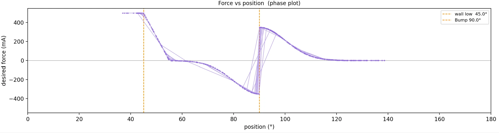
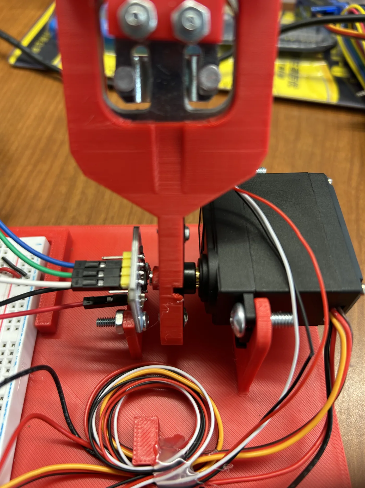

01Overview
A haptic device turns software into something you can physically feel. The microcontroller reads the paddle angle, looks up the force the virtual environment should apply at that position, and commands the motor current to produce it. It repeats this fast enough that the virtual objects feel solid to your hand.
The project covered the full stack: a 3D-printed baseplate and paddle, sensor and driver integration, and the firmware that renders the environment.
02Mechanical design
I modeled everything in CAD before printing. The baseplate has locating pockets for the breadboard and battery pack, plus uprights that hold the motor and support the paddle shaft. The paddle couples to the motor horn, and a magnet on the shaft lines up with the AS5600 magnetic encoder board to measure angle without contact.



03Electronics
- Pico 2 WMain controller, connected to the computer for logging
- AS5600Magnetic angle sensor for paddle position
- DRV8833H-bridge that drives the motor in both directions
- INA219Current sensor over I²C for closed-loop force (torque) control
- HX711 + load cellMeasures the force applied by the user
- MG996R + 6 V packGearmotor actuator and its power supply

04Force rendering
The virtual environment is defined as a force-versus-position map. Motor torque is proportional to current, so the "force" is commanded as a motor current in mA:
- Wall (45°). Below the wall the motor pushes back at the 500 mA limit. A short spring region above it makes the contact feel firm without chattering.
- Bump (90°). Coming from below, force builds against you up to the peak at 90°. Past the peak it flips direction and pushes you over, which feels like a detent clicking into place.


05Try it: feel the wall
Drag the red paddle, or drag along the plot. The same force map pushes back on your cursor. Try pushing into the wall, then slowly over the bump and let go.
Virtual environment
—Your cursor acts like a spring pulling on the paddle, and the rendered force pushes back. Arrows show the direction and size of the force.
06Build photos


07Takeaways
- Design for assembly. Locating features in the baseplate made the electronics quick to place and kept the wiring tidy enough to debug.
- Stiffness vs. stability. A perfectly rigid virtual wall chatters. A short spring region at the boundary feels solid and stays stable.
- Next time: I'd close the loop on the load cell for true force control and add damping to the virtual environment.